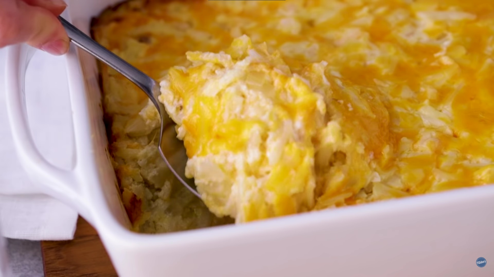

My Favorite Recipe
Chessy Potatoes
Ingrediants
- 1 pint (2 cups) sour cream
- 1 can (10 3/4 oz) condensed cream of chicken soup
- 1/2 cup butter, melted
- 1 tablespoon garlic salt
- 1 cup chopped onions
- 1 bag (30 oz) frozen country-style shredded hash brown potatoes, partially thawed
- 2 cups shredded Cheddar cheese (8 oz)
Instructions
- Heat oven to 350°F.
- In large bowl, combine 1 pint (2 cups) sour cream, 1 can (10 3/4 oz) condensed cream of chicken soup, 1/2 cup melted butter, 1 tablespoon garlic salt, 1 cup chopped onions,
1 bag (30 oz) frozen country-style shredded hash brown potatoes, partially thawed, and 2 cups shredded Cheddar cheese (8 oz); stir until well blended. - Pour into ungreased 13x9-inch (3-quart) glass baking dish.
- Bake 45 minutes.